어로산업기사 (2012-05-20 기출문제)
1과목: 어구학
1. 180 denier, 30 Nec인 망사는 약 몇 tex 인가?
- 15tex
- 20tex
- 33tex
- 60tex
(정답률: 75%)

2. 공기 중의 무게가 5kg 이고 비중이 7.8인 철구의 침강력은 약 얼마인가? (단, 물의 비중은 1.0이다)
- 3.6kg
- 4.0kg
- 4.4kg
- 4.8kg
(정답률: 70%)
3. 범포식 근해 안강망 어구에서 총 부력을 총 침강력보다 크게 하는 주 이유는?
- 유속의 증가에 따른 망고 감소를 적게 하기 위해서
- 그물의 길이 증가에 비례하는 아궁이 면적을 확보하기 위해서
- 저착성 어류보다 뜬 고기류를 주로 어획하기 위해서
- 유속이 일정치 이하가 되면 그물을 해저로부터 부상 시키기 위해서
(정답률: 76%)
4. 건착망에서 가장 필요하다고 생각되는 섬유의 성질은?
- 비중
- 유연성
- 투명성
- 내마찰성
(정답률: 75%)
5. 외끌이 기선 저인망 어구에서 어획 성능을 결정하는 중요한 요소는?
- 어구의 부력
- 그물의 성형률
- 자루그물의 구성
- 후릿줄의 길이
(정답률: 88%)
6. 다음 중 조류에 밀려오는 어류를 잡는 어구는?
- 낙망
- 자망
- 안강망
- 건착망
(정답률: 77%)
7. 그물코의 면적이 최대가 되는 성형률은 약 얼마인가?
- 30%
- 40%
- 50%
- 70%
(정답률: 94%)
8. 성형률을 8⑤로 하여 완성된 길이가 12m되는 그물어구를 만들 때 필요한 그물감의 길이는?
- 9.6m
- 15m
- 24m
- 60m
(정답률: 83%)
9. 뜸의 체적을 V, 부력을 F, 수중중량을 W, 물의 밀도를 p,라 하면 뜸의 부력 F는?
- F=Vp-W
- F=V-Wp
- F=Vp+W
- F=V+Wp
(정답률: 77%)
10. 그물감이 매매되는 단위를 무엇이라 하는가?
- 사리
- 필
- 자
- 속
(정답률: 94%)
11. 뻗친 길이가 42mm되는 낚시의 호수는?(오류 신고가 접수된 문제입니다. 반드시 정답과 해설을 확인하시기 바랍니다.)
- 2호
- 3호
- 4호
- 5호
(정답률: 82%)
12. 그물감의 사단하는 방법에 있어서 발 하나만을 끊는 것을 무엇이라고 하는가?
- point cut
- mesh cut
- bar cut
- cut
(정답률: 83%)
13. 컴파운드 로프(compound rope)란?
- 와이어 로프에 섬유심을 넣은 것
- 섬유 로프에 와이어심을 넣은 것
- 섬유 로프에 타르염을 한 것
- 서로 다른 와이어를 혼합하여 만든 것
(정답률: 88%)
14. 저층 오터트롤 어구의 규모를 결정하는데 사용하는 기준으로 가장 적합한 것은?
- 선박의 톤수
- 기관의 마력
- 어장의 수심
- 윈치의 용량
(정답률: 83%)
15. 유자망 조업 시에 그물이 뜸줄 또는 발줄을 중심으로 하여 꼬이듯이 말려버리는 현상은?
- 순대말이 현상
- 망권 현상
- 망연 현상
- 막대꼬임 현상
(정답률: 98%)
16. 그물실을 연소시켰을 때 양초 다는 냄새가 나는 것은?
- 폴리비닐 클로라이드(PVC)
- 폴리에스테르(PES)
- 폴리아미드(PA)
- 폴리에틸렌(PE)
(정답률: 89%)
17. 멍이 주로 쓰이는 어구는?
- 자망
- 안강망
- 낙망
- 들망
(정답률: 84%)
18. 건착망 어구의 크기를 결정하는 요인에 들지 않는 것은?
- 어군의 최대 유영 수심
- 배의 투망속도
- 어장과 육상기지와의 거리
- 조업시간
(정답률: 88%)
19. 재래식 권현망 어구에서 1차적으로 어군을 군집하는 역할을 하는 것은?
- 오비기
- 수비
- 아래턱
- 자루그물
(정답률: 97%)
20. 트롤의 전개판이 자루그물의 입구를 과대하게 전개시킬 때 혹은 반대로 과소하게 전개시킬 때의 그물 입구의 형상에 대한 설명으로 맞는 것은?
- 과대하면 세운 타원형의 형태가 되어 망폭이 좁아진다.
- 과소하면 망구는 타원현의 형태가 되어 망고가 낮아진다.
- 과대하면 입구가 높아지고 입구의 면적이 넓어진다.
- 과소하면 망고가 높아지나 입구의 면적은 좁아진다.
(정답률: 82%)
2과목: 어업기기학
21. 트롤윈치의 소요마력에 관한 다음 설명 주 틀린 것은?
- 끝줄의 장력은 양망 말기에 가장 크므로 소요마력이 더 커진다.
- 소형선에서의 소요마력은 예망마력과 거의 같다.
- 3500ps이상의 대형선의 소요마력은 예망마력의 절반정도이다.
- 소형선에서의 소요마력은 기관의 축마력과 거의 같다.
(정답률: 79%)
22. 선망어업에 있어서 그물을 투망해서부터 그물 자락의 침강 상태를 정확하게 파악할 목적으로 사용된 장치는?
- 네트 존데
- 네트 리코더
- 텔레사운드
- 소나
(정답률: 90%)
23. 다음 중 줄을 감아올릴 때 양승기가 감아올리는 속도(v)와 어선이 진행하는 속도(V)를 비교할 때 줄을 감아올리는데 가장 편리한 상태는?
- V > v 일 때
- V = v 일 때
- V < v 일 때
- V ≠ v 일 때
(정답률: 86%)
24. 다음 중 초음파와 관계가 가장 먼 것은?
- 어군탐지기
- 음향 측심기
- 소나
- 레이더
(정답률: 98%)
25. 수중에 있어서의 초음파의 전반 손실에 대한 감쇠함수를 정확하게 측정하고, 이 감쇠 함수의 역함수에 해당하는 증폭기를 개발하여 수중 초음파의 에너지 손실을 보정하고 있다. 이 역할을 하는 증폭기는?
- TVG
- CTR
- APT
- PTT
(정답률: 79%)
26. 풀리에 홈을 파서 줄이 홈 양쪽에 걸리는 경우, 홈이 없을 때와 비교하면 줄과 풀리 사이의 마찰력은 어떻게 변하는가?
- 증가한다.
- 감소한다.
- 감소한 후 증가한다.
- 증가한 후 감소한다.
(정답률: 91%)
27. 8노트의 속력으로 항해 중 어군탐지기의 time mark의 약 2분에 해당하는 어군이 기록되었다면 실제 어군의 길이는? (단, 어군은 정지해 있으면, 1노트는 0.5m/s로 함)
- 약 120m
- 약 240m
- 약 480m
- 약 960m
(정답률: 82%)
28. 유체 변속기의 특징이 아닌 것은?
- 원동기의 시동이 용이하다
- 저온에서도 고정성이 되어 효율이 증가한다.
- 원동기를 실수시키지 않는다.
- 완충작용이 있어 기계의 수명을 길게한다.
(정답률: 84%)
29. 다음 중 건착망의 양망 장치가 아닌 것은?
- 파워 블록(Power block)
- 네트 호울러(Net hauler)
- 티언 테이블(Turn table)
- 라인 호울러(Line hauler)
(정답률: 80%)
30. 수중의 두 점간의 압력의 차이를 이용해서 트롤그물의 어구 높이, 자망의 수직 전개의 깊이 등을 측정`기록하는 어업계측기는?
- 자기식 수중장력계
- 자기식 수중망고계
- 자기식 수중각도계
- 자기식 수중망심계
(정답률: 94%)
31. 쌍끌이 기선저인망에서 사용하는 끌줄의 권양장치는?
- 윈치
- 라인 호울러
- 원추형 권동
- 네트 호울러
(정답률: 63%)
32. 다음 중 컬러 어군탐지기에서 해저와 해저 부근의 어군 형상이 분리되어 나타나지 않는 경우는?
- 해저의 저질이 펄인 경우
- 대규모의 어군이 존재하는 경우
- 해저의 굴곡이 심한 경우
- 해저의 형상이 산맥으로 형성된 경우
(정답률: 95%)
33. 네트 리코더의 구성 요소가 아닌 것은?
- 컬러 모니터
- 송파기
- 수파기
- 승강 선회 장치
(정답률: 95%)
34. 고출력 및 기계적인 강도가 우수하여 해양에서 사용하는 초음파 관측 장비에 많이 쓰이는 음파 발생용 진동자의 방식으로 가장 적합한 것은?
- 자왜식
- 압전식
- 전왜식
- 전자식
(정답률: 70%)
35. 짐댓틀(derrick)에서 짐줄이 내림 줄에 따라서 인도될 때 내림 줄의 장력 T, 짐의 무게 W, 내림 줄의 길이 AB, 마스트(Mast)의 길이 AE, 짐줄의 장력P 라고 하면 이들의 관계식은?
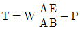
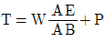
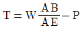
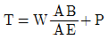
(정답률: 82%)
36. 트롤 어구에서 전개판의 전개 간격 측정장치의 송`수파기는 어디에 부착하는가?
- 한쪽 끌줄
- 한쪽 전개판
- 한쪽 날개 앞끝
- 천정망 입구의 뜸줄
(정답률: 91%)
37. 전압과 전류의 실효값을 가각 E, T라고 하고, 역률을
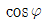
라고 하면 다음 중 교류 전력 P는?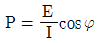
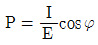
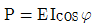
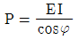
(정답률: 76%)
38. 음향측심기에 있어서 수중 음속의 변동 요인과 가장 거리가 먼 것은?
- 온도
- 압력
- 유속
- 염분
(정답률: 84%)
39. 다음 중 어로 기계를 구동시키는데 쓸 수 있는 동력 전달 방법으로 유압식이 많이 이용되는 가장 큰 이유는?
- 전기식보다 구조가 간단하기 때문이다.
- 유체 매개로 완충 작용과 속도 조정이 가능하기 때문이다.
- 다른 동력 전달 방법보다 고장이 적기 때문이다
- 기계식보다 소음이 적게 나기 때문이다.
(정답률: 78%)
40. 회전체의 동력을 산출하기 위하여 어떤 측정기를 사용하는가?
- 로드 셀(load cell)
- 스트레인 게이지(strain gauge)
- 장력 측정기(tension meter)
- 토오크(torque) 변환기
(정답률: 78%)
3과목: 어장학
41. 일반적으로 해양투명도를 측정하는데 가장 많이 사용하는 투명도판의 직경은?
- 15inch
- 15cm
- 30inch
- 30cm
(정답률: 97%)
42. 북서 태평양인 알류산 열도 근해의 극전선으로 인한 어장은?
- 대륙붕 어장
- 조경 어장
- 용승 유역 어장
- 퇴초에 의한 어장
(정답률: 62%)
43. 아래 그림에서 수온 약층은?
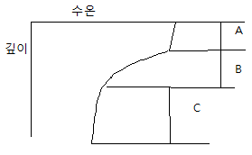
- A
- B
- C
- C이하
(정답률: 94%)
44. 우리나라 선망 어업에 있어서 고등어의 집어가 잘 되 않아서 조업의 비율이 현저하게 낮은 때는?
- 보름과 같은 월명기
- 그믐과 같은 어두운 밤(월암기)
- 주로 야간 시
- 그믐과 보름 사이
(정답률: 84%)
45. 티-에스 도표(T-S diagram)와 관련이 가장 먼 것은?
- 수괴분석
- 적조발생해역 검출
- 해수의 안정도 판단
- 해양관측의 오차 검출
(정답률: 83%)
46. 북반구에서 바람이 불어가는 쪽을 복 때 오른쪽으로 흐르는 해류는?
- 용승
- 취송류
- 이류
- 대류
(정답률: 76%)
47. 바닷새(sea birds)이 움직임이 느리고, 비교적 수면의 높은 곳에서 원형을 그리며 움직일 경우, 어군의 추정으로 가장 적합한 것은?
- 어군의 이동이 아주 빠르다.
- 어군이 펴면 부근에 부상하여 천천히 이동한다.
- 어군이 비교적 깊은 곳에서 천천히 이동한다.
- 어군이 표면 부근으로 부상하며 이동이 빠르다.
(정답률: 78%)
48. 온대 저기압에 관한 설명 중 옳은 것은?
- 전선대를 따라서 이동한다.
- 상층기류와 직각 방향으로 이동한다.
- 이동속도는 급격하게 변화한다.
- 저위도 지방에서 발생한다.
(정답률: 73%)
49. 각층 관측 시 wire의 경각이 10° 일대 300m층에서 채수하려고 하면 wire의 길이를 몇 m 더 인출하여야 하는가?(단, sin10°는 0.17, cos10°는 0.98, tan10°는 0.18 이다.)(오류 신고가 접수된 문제입니다. 반드시 정답과 해설을 확인하시기 바랍니다.)
- 약 6.1m
- 약 12.4m
- 약 51.2m
- 약 54.3m
(정답률: 60%)
50. 다음 어종 중 서식 수온의 범위가 가장 낮은 것은?를 통하여 정답 입력 부탁 드립니다.)
- 멸치
- 꽁치
- 조기
- 갈치
(정답률: 73%)
51. 등압선의 직각 방향의 단위 거리에 대한 기압의 변화율은?
- 기압경향
- 기압경도
- 등압선
- 기압등변화선
(정답률: 90%)
52. 어류산란기에 수온이 비정상적으로 낮아질 때 나타나는 현상은?
- 산란기가 빨라진다.
- 부화기간이 짧아진다.
- 산란장이 이동된다.
- 산란기간이 짧아진다.
(정답률: 80%)
53. 북반구의 동안류(캘리포니아 해류, 카나리 해류)와 서안류(흑조, 만류)를 비교 설명한 것 중에서 잘못된 것은?
- 동안류는 일반적으로 한류의 성격을 띤다.
- 동안류가 저염분인데 비하여 서안류는 고염분이다.
- 동안류는 편서풍대에서 흘러온 해류이다.
- 도안류의 유속은 서안류보다 빠르다.
(정답률: 71%)
54. 연안이나 하구역(강물이 바다로 유입되는 곳) 등의 관측 간격을 외양보다 좁게 하는 이유는?
- 변화가 크기 때문에
- 시간이 많기 때문에
- 조류가 크고 물이 거의 일정한 범위 내에서 움직이기 때문에
- 배가 많이 다니기 때문에
(정답률: 66%)
55. 다음 중 저서어류의 주 먹이가 되는 것은?
- 식물플랑크톤
- 동물플랑크톤
- 유영동물
- 저서동물
(정답률: 67%)
56. 다음 중 조경역에서 주로 볼 수 있는 사항은?(오류 신고가 접수된 문제입니다. 반드시 정답과 해설을 확인하시기 바랍니다.)
- 수형(水型)이 비슷하다.
- 바람이 많이 불어서 파도가 세어지기 때문에
- 따뜻한 표면수가 외양에서 연안으로 유입되므로
- 표면 수온이 용승으로 인하여 차가워지고 바람으로 인하여 혼합 작용하기 때문에
(정답률: 53%)
57. 일반적으로 폭풍 전후의 1~2일에 어획이 좋다는 설에 대한 설명으로 가장 적장한 것은?
- 표면 수온이 낮아져서
- 바람이 많이 불어서 파도가 세어지기 때문에
- 따뜻한 표면수가 외양에서 연안으로 유입되므로
- 표면 수온이 용승으로 인하여 차가워지고 바람으로 인하여 혼합 작용하기 때문에
(정답률: 92%)
58. 해양에서의 수온의 변화 범위는?
- -2.0~35.0℃
- -5.0~40.0℃
- 0~30.0℃
- 5~25.0℃
(정답률: 93%)
59. 어장 오염에 관한 설명 중 옳은 것은?
- 열오염의 결과 수중의 산소가 현격하게 감소한다.
- 하수 오물이나 유기 배설물의 무제한 유입은 해양 영양 물질을 무제한 공급하므로 해양 생산량을 무제한으로 증대시켜서 유익하다.
- 석유는 모든 생물체에 유독하지만 수면 위에 뜨고 투과층을 형성하기 때문에 가스의 교환이나 햇빛의 통과를 방해하지 않는다.
- 하수 오염과 영양 물질이 함께 작용하여 그 지역의 산소 발생을 증대시키게 된다.
(정답률: 77%)
60. 다음 중 어류의 화학적 수용 기관과 관계가 깊은 것끼리 짝지은 것은?
- 모천회귀-뱀장어
- 모천회귀-은어
- 생활 영역 구분-은어
- 염분농도-은어
(정답률: 97%)
4과목: 어법학
61. 기선권현망 어업의 조업과정에 관한 설명으로 틀린 것은?
- 2척의 망선이 접현하여 그물을 반씩 나누어 싣고 어장을 향한다.
- 투망은 어로장의 지시에 따라 버릿줄을 풀로 오비기, 수비, 자루그물 순으로 투입한다.
- 투망 초기에는 한쪽 날개 길이를 한변으로 하는 정 삼각형 모양으로 망선의 간격을 넓힌다.
- 차차 간격을 좁히며 30~60분 전도 예망하고 2cur의 망선이 접근한 후 양망한다.
(정답률: 72%)
62. 재래식 권현망 어구의 특징에 대한 설명으로 틀린 것은?
- 1개의 자루그물과 2개의 날개그물로 구성된다.
- 자루그물 입구의 위쪽이 아래쪽보다 앞으로 나와 있다.
- 깔때기 그물을 사용하고 있다.
- 자루그물은 90~160경의 여자망지를 사용한다.
(정답률: 80%)
63. 건착망 본선에 요구되는 조건으로서 틀린 것은?
- 건현이 높을 것
- 복원성이 좋을 것
- 선회성이 좋을 것
- 작업갑판이 넓을 것
(정답률: 82%)
64. 안강망 어선의 어로장비화 조업 방법에 관한 설명 중 틀린 것은?
- 주요 어로 장비는 윈치와 캡스턴 및 갤로스이다.
- 어구의 투`양망은 왕복조류 해역에서는 1일 4회, 회전 조류 해역에서는 1일 2~4회 한다.
- 조업은 대조시를 전후하여 약 10일간 한다.
- 근해안강망 어선에서는 1통의 어구를 사용한다.
(정답률: 64%)
65. 바닥고기를 트롤로 어획할 때 어획할 때 예망속고와 전개폭이 갖추어야 할 요건으로 옳은 것은?
- 예망속도-느리게, 전개폭-작게
- 예망속도-느리게, 전개폭-크게
- 예망속도-빠르게, 전개폭-크게
- 예망속도-빠르게, 전개폭-작게
(정답률: 93%)
66. 어구의 전체 저항 R=6000kg, 예망속도 V=2m/s인 트롤어구를 예망하는데 소요되는 마력NHP(ps)?
- 160
- 180
- 200
- 220
(정답률: 61%)
67. 다음 설명에 해당하는 어법은?
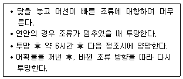
- 봉수망
- 주목망
- 안강망
- 건강망
(정답률: 89%)
68. 정치망에서 어군을 맨 처음으로 차단하고 유도하는 부분은?
- 헛통
- 통그물
- 사개
- 길그물
(정답률: 73%)
69. 멸치자망의 그물 깊이는 무엇으로 결정하는가?
- 발줄
- 뜸줄
- 코걸이줄
- 뜸연결줄
(정답률: 52%)
70. 우리나라 안강망 어구의 중요한 부속구가 아닌 것은?
- 물돛
- 범포
- 수해
- 닻
(정답률: 77%)
71. 다랑어 어업에서 어종과 어획수온이 일치하는 것은?
- 날개다랑어 : 14~23℃
- 가다랑어 : 17~28℃
- 눈다랑어 : 18~22℃
- 황다랑어 : 18~31℃
(정답률: 73%)
72. 정치망에서 적절한 멍의 고정 계수를 위한 멍줄의 길이는 수심의 몇 배 정도가 적절한가?
- 1.5~2배
- 2~2.5배
- 2.5~3배
- 3~3.5배
(정답률: 69%)
73. 근래의 권현망 조업 시 적정 예망 속도 및 시간은?
- 0.5 ~ 0.8노트, 30분 ~ 1시간
- 0.5 ~ 0.8노트, 1 ~ 2시간
- 1 ~ 1.5노트, 30분 ~ 1시간
- 1.5 ~2 노트, 1 ~2 시간
(정답률: 75%)
74. 군을 이루어 중층을 유영하는 어류를 어획하는데 이용하는 어법 중 가장 효과적인 어업은?
- 통발어업
- 선망어업
- 저층자망어업
- 저인망어업
(정답률: 95%)
75. 다랑어 주낙 어선에서 다랑어를 인양하여 주된 양승작업을 하는 곳은?
- 선수 측 작업 갑판 좌현
- 선수 측 작업 갑판 우현
- 선미 측 작업 갑판 좌현
- 선미 측 작업 갑판 우현
(정답률: 78%)
76. 트롤 어업에서 전개판의 내외경사에 관한 설명으로 옳지 않은 것은?
- 수심에 대한 끌줄의 비가 작은 때는 외측경사 한다.
- 끌줄의 길이가 일정할 때는 예망속도가 느릴수록 경사한다.
- 외측경사보다는 내측경사각 전개력이 양호하다.
- 전개판을 내측으로 경사시키기 위해서는 위쪽 뒷(Upper Bridle)을 길게 한다.
(정답률: 95%)
77. 선미식 트롤의 조업 시 뻘을 뜨는 원인이 되기 쉬운 것은?
- 예망속도가 빠르다.
- 끌줄이 상당히 짧다.
- 뜸줄이 발줄보다 길다.
- 발줄이 상당히 무겁다.
(정답률: 68%)
78. 우리나라 연안에서 꽁치 어획의 85%~90%를 차지하는 어법은?
- 걸그물
- 주목망
- 봉수망
- 정치망
(정답률: 83%)
79. 정치망에서 통그물을 어구 전체가 수면에 뜰 수 있게 묶어두는 것은?
- 뜸줄
- 문쇠
- 사개
- 깔때기
(정답률: 62%)
80. 선망어업의 대상이 되는 어군의 크기에서 길이와 깊이와의 대략적인 관계로 옳은 것은?
- 어군의 깊이는 길이와 비슷하다.
- 어군의 깊이는 길이의 1/2~1/3 정도이다.
- 어군의 깊이는 길이의 1/3~1/5 정도이다.
- 어군의 깊이는 길이의 1/5~1/7 정도이다.
(정답률: 64%)
30 Nec는 1그램의 섬유의 길이가 30m이라는 것을 의미합니다. 따라서 1미터의 길이에 해당하는 섬유의 무게는 0.02/30 = 0.00067g입니다.
이제 이 값을 텍스로 변환해보겠습니다. 텍스는 1그램의 섬유의 길이가 1000m일 때의 섬유의 직경을 의미합니다. 따라서 1미터의 길이에 해당하는 섬유의 직경은 0.00067 x 1000 = 0.67mm입니다.
따라서 이 망사의 텍스는 20tex입니다.